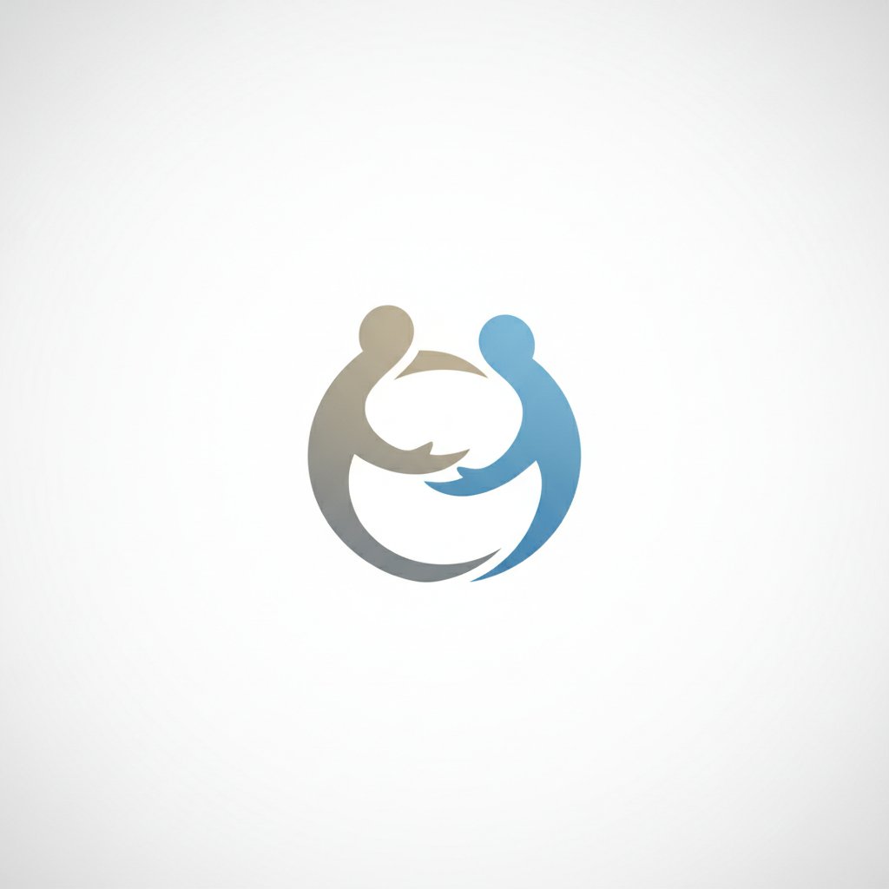
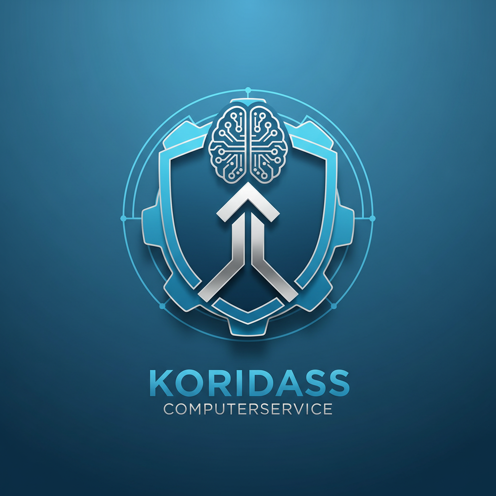
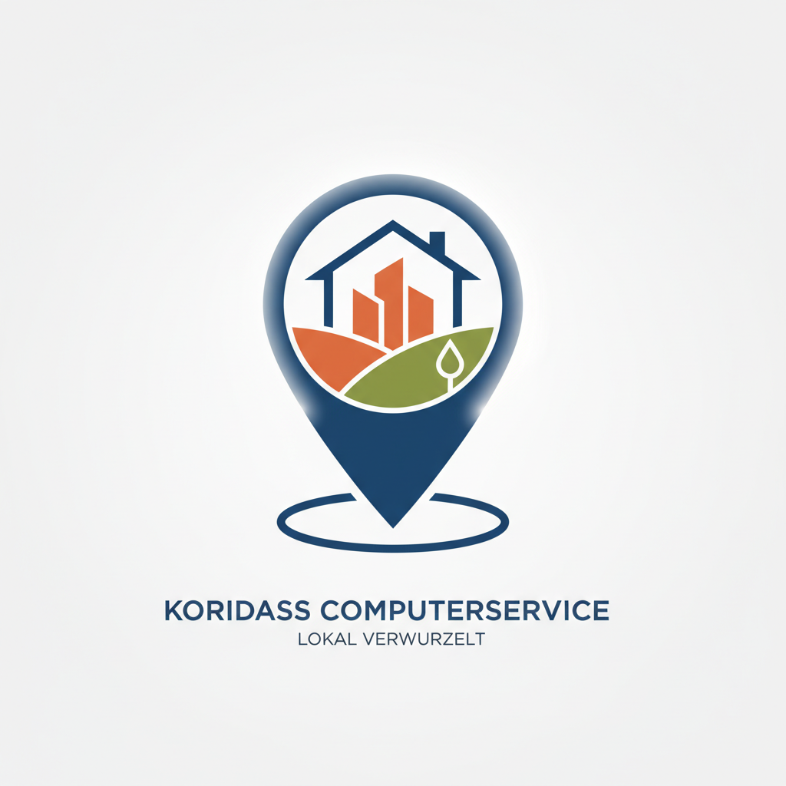

Ihr lokaler IT-Experte in Wiesbaden
Persönlich, kompetent und direkt vor Ort: Computerservice, Hardware und Netzwerklösungen für Privat- und Geschäftskunden.
Unsere Werte
Ihr zuverlässiger Partner vor Ort
Wir kombinieren technisches Know-how mit persönlichem Service direkt in Wiesbaden-Naurod.

Persönlich
Wir nehmen uns Zeit für Ihr Anliegen und finden gemeinsam die passende Lösung – ohne Fachchinesisch.

Kompetent
Mit jahrelanger Erfahrung und als Partner starker Marken bieten wir Ihnen fundierte Beratung und professionellen Service.

Lokal
Als Ihr Nachbar in Wiesbaden-Naurod sind wir schnell erreichbar und bieten Ihnen Service direkt vor Ort.
Leistungsspektrum
Umfassender IT-Service aus einer Hand
Von der Reparatur Ihres Computers über die Einrichtung Ihres Heimnetzes bis zum Verkauf hochwertiger Hardware – wir sind für Sie da.
- Computer-Reparatur & Fernwartung
- Verkauf von PCs, Notebooks & Zubehör
- Einrichtung von Internet & Netzwerk (FRITZ!Box)
- Persönliche Beratung und Installation

Partner starker Marken
TERRA Computer
AVM FRITZ!Box
1&1
Telekom
ESET
Wortmann AG
TERRA Computer
AVM FRITZ!Box
1&1
Telekom
ESET
Wortmann AG
Haben Sie Fragen oder ein konkretes Anliegen?
Zögern Sie nicht, uns zu kontaktieren. Wir helfen Ihnen gerne weiter.
Jetzt Kontakt aufnehmen